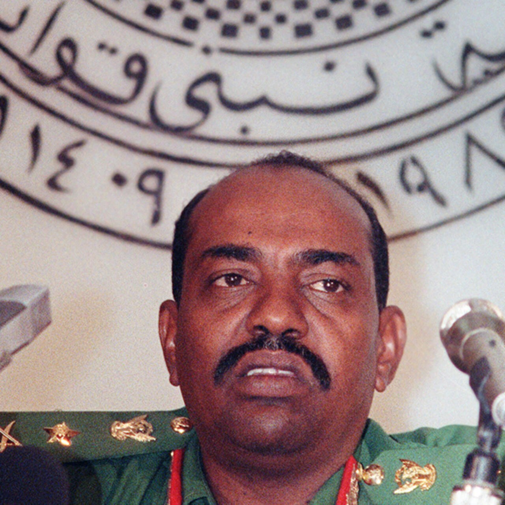

Military Coup and Seizure of Power
June 30, 1989
Omar al-Bashir seized power through a military coup during a period of political instability, weak civilian leadership, and conflict in southern Sudan.
Interactive Timeline
Use the controls below to move across the timeline. Each point opens a real historical turning point and updates the main event summary, the real image connected to that moment, the propaganda-style newspaper article, and the diary entry linked to the event.
June 30, 1989
Omar al-Bashir seized power through a military coup during a period of political instability, weak civilian leadership, and conflict in southern Sudan.
Creative Components
Each timeline point includes a propaganda-style newspaper front page and a fictional diary entry based on the real historical event selected above.
